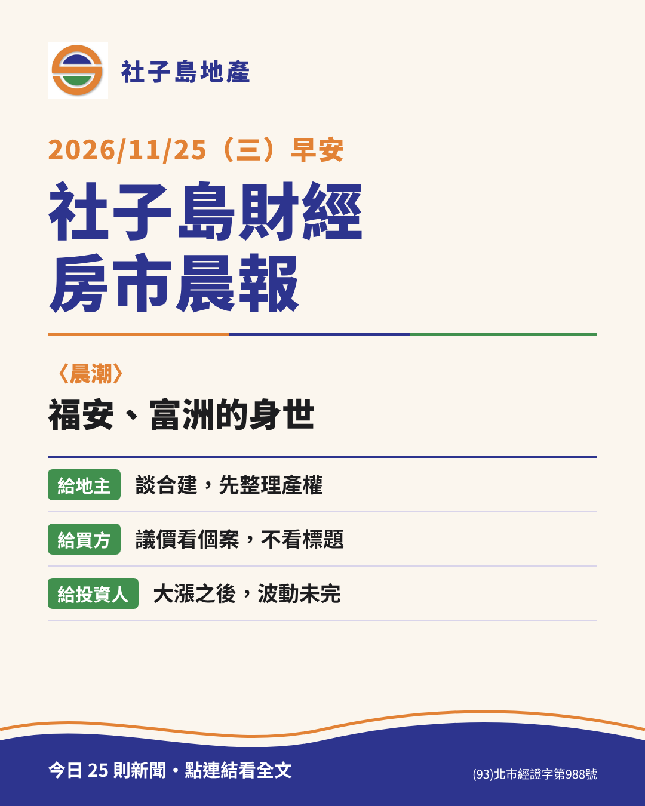

2026/11/25 (三) 早安
社子島財經房市晨報｜福安、富洲的身世
昨天台股大漲 3,310 點，創下史上最大漲點；同一天，央行數字顯示建商的建築貸款一年少了 2.46%，是十多年來最大的減幅。股市熱、房貸創新高，蓋房子的錢卻在變少。今天的〈今日一題〉，說說「買房熱、開發冷」對想談合建的地主代表什麼；北市府也公布北士科「六星啟航」，園區已有 66 家企業進駐。週三早上，25 則新聞，點標題就能讀原文。
〈潮汐表〉今天的三道潮水
- 給地主地價稅 11/30 截止；想談合建，先把產權、共有人與分配底線整理好。
- 給買方建商資金緊、餘屋多，議價空間在個案，不在新聞標題。
- 給投資人一天大漲三千點、隔夜美股又回跌，波動還沒結束。
〈晨潮〉地名小學堂
福安、富洲的身世
昨天在基隆河邊，阿公指著身後的社區問我們：「福安、富洲，這兩个里名，到底是按怎來的？阮細漢的時，大家攏講溪洲底，啥物時陣變做福安、富洲？」阿公，這題我們去翻了臺北市的里基本資料，答案比想像中有意思。
先說福安。臺北市鄰里服務網的資料寫著，福安里成立於民國 35 年，也就是 1946 年，光復後第二年；這一帶從前叫做「溪洲底」。溪洲，是河流中間沖積出來的沙洲；溪洲底，就是沙洲的那一頭。阿公小時候聽大人講的老名字，原來一直跟著這塊地。
再說富洲。島上原本還有兩個里：「富安里」和「中洲里」。市府資料記載，富安里古名「溪沙尾」，中洲里俗稱「浮汕」，就是我們上週三講過的那個「浮汕」。民國 79 年（1990 年）士林區調整里界，富安里和中洲里合併成今天的富洲里；原富安里延平北路八段 2 巷以東的部分，則劃進了福安里。
社子島里名小抄
- 福安里｜民國 35 年成立，舊稱「溪洲底」
- 富洲里｜民國 79 年由富安里（古名溪沙尾）與中洲里（俗稱浮汕）合併
- 社子｜來自凱達格蘭族麻少翁社的聚落「社仔」
那「富洲」兩個字是什麼意思？公開資料沒有寫明。我們從字面推想，很可能是各取富安的「富」、中洲的「洲」，把兩個里的名字留在一起；這是我們的推想，如果您知道當年的故事，很歡迎告訴我們。還有一個小知識：「社子」這個名字，來自從前凱達格蘭族麻少翁社的聚落，「社仔」叫久了，就成了社子。
一座島，兩個里，背後是溪洲底、溪沙尾、浮汕三個老地名，一層一層疊起來。未來社子島開發，路名、街廓都會換新，但這些老名字，值得有人記下來。往下滑，是今天的新聞；最後在〈廟口泡茶區〉，阿公在等您。
——社子島地產團隊
〈今日一題〉
買房的錢創新高，蓋房的錢在變少：想談合建的地主要知道什麼？
先看數字。央行最新統計，10 月國銀購屋貸款餘額約 12 兆 947 億元，再創歷史新高；但借給建商蓋房子的「建築貸款」，卻比去年同期減少 2.46%，是十多年來最大的減幅。報導用一句話形容：買房熱、開發冷。
為什麼會這樣？銀行受信用管制和資金規定影響，對建商放款收得比較緊；全台新建餘屋又創新高，建商寧可先把手上的房子賣掉，也不急著再買地、再開工。央行日前雖然刪掉建商「一定期間內動工」的切結規定，讓建商不必硬著頭皮開工，但也代表新案步調會更謹慎。
跟社子島和北台灣的地主有什麼關係？今天週三，剛好是我們談合建的日子。建商資金緊的時候，談合建通常會出現幾個變化：建商更挑地段，分配比例談得更保守，簽約到動工的時間可能拉長，也更在意地主產權是否整齊、能不能一次整合。對地主來說，這時候比的不是誰開價高，而是誰的條件清楚、誰的合作對象穩。
我們的建議：想談合建，先把三件事準備好，產權與共有人整合、土地使用分區與可建容積、心中可以接受的分配比例與時程；同時也要看清楚對方的財務與過去完工紀錄。社子島還在區段徵收審議階段，配地之後才會進入建築開發，現在先把功課做好，到時候談起來才有底氣。
資料：經濟日報、自由財經 11/24 報導央行 10 月放款統計；udn房地產 11/23 報導央行刪除建商動工切結規定。解讀為本團隊意見，不構成投資或法律建議。
〈打炒房兩年，預售屋還漲了多少？〉
- 25%七都漲幅前十大行政區，預售屋均價兩年都漲超過 25%
- 80.7%漲最多的是新北汐止，每坪從約 44.1 萬元漲到 79.7 萬元
- 170 萬台北市中正區預售均價突破每坪 170 萬元，是榜上單價最高的一區
我們的解讀：漲幅大的地方，多半是有指標大案集中成交、或原本基期低；買氣其實在降溫，是「量縮價撐」，不是全面大漲。（數字引自經濟日報 11/23 報導 591 實價登錄統計）
主商圈：社子島・北士科・關渡洲美平原2 則
北市府公布北士科「六星啟航」藍圖：園區已有 66 家企業進駐，金仁寶與輝達海外總部預計分別在 2028、2030 年進駐；洲美快速道路匝道、福國路延伸與社子島聯外橋梁已進入規劃設計。黃仁勳回任輝達執行長，蔣萬安表示雙方合作不受影響。社子島區段徵收計畫仍在內政部審議，這兩天沒有新的官方進度
延伸圈：北投士林・淡水・八里・淡海1 則
北市總價 7,000 萬元以上的豪宅交易，士林、北投的占比都在提高，業者認為北士科的產業發展是主要推力
大台北：台北市・新北市・基隆3 則
台北市都更 28 年來完工 320 案，平均一個月不到一案；雙北豪宅前十月成交超過 140 戶；同一棟豪宅，兩戶轉手一賠一賺，實價登錄看得一清二楚
其他縣市：桃園・新竹・台中（離台北由近到遠）4 則
桃園 12 區只有 4 區房價還在漲，龍潭因龍科三期受關注；新竹買氣回升，建商把好戶別先留著；台中股市一震，接待中心來客掉到零，豪宅建商卻規劃明年推案 300 億
稅務與法律實務1 則
地價稅 11 月 30 日（星期一）截止；用約定轉帳繳稅的人，12 月 1 日凌晨扣款，記得前一天把存款留足
土地・國際觀察1 則
日本修法，軍事基地等重要設施周邊的土地買賣改成許可制；土地交易和國家安全的關係，各國都在收緊
全台房市・政策・資金・高齡6 則
打炒房兩年，七都十大行政區預售價仍漲逾 25%；國銀房貸餘額創新高，建築貸款卻是十多年最大減幅；銀行不借、民眾不買、賣方不降的僵局怎麼解；內政部說明超高齡社會的住宅三大政策
生活與天氣2 則
東北季風持續，北部今天濕涼有雨、約 16 到 20 度，週五前後短暫放晴；台中安藤忠雄設計的「童書之森」主體完工，預計明年開館
今日財經大事5 則
台股昨天大漲 3,310 點、收 40,122 點，史上最大漲點，但成交量是今年新低，外資仍賣超；金管會說限空措施視市況退場；隔夜美股輝達回跌近 6%、費半重挫近 8%，今天開盤要有心理準備
〈阿公講古〉
週三早上，風還是涼的，阿公穿著外套，慢慢走到島頭的濕地邊。退潮了，泥灘上有幾隻白鷺鷥。
「溪洲底、溪沙尾、浮汕，原來攏有寫落來。」阿公點點頭，「阮老爸彼代人，講的就是這幾个名。」
他望向基隆河對岸，北士科的大樓一棟一棟立起來，更遠一點，是一大片平平的田。
「阮少年時陣，對岸洲美彼片攏是稻仔田，割稻仔的時，規片金金。」阿公瞇著眼睛，「這馬邊仔起遐濟大樓，彼片田猶有人咧作無？」
他轉過頭問：「洲美的田，這馬猶咧種啥物？以後會按怎？」
阿公的問題，我們明天回答。
〈廟口泡茶區〉
阿公從濕地走回來，廟口榕樹下的茶剛好泡開。老地名一層一層疊起來，土地的事也一樣，要一步一步談清楚。
想和建商談合建，分配比例之外，產權整合、可建容積、動工時程和對方的財務，都要先看清楚；這一段，我們陪您一起談。
也想問問您：您家裡的長輩，還記得「溪洲底」「溪沙尾」「浮汕」這些老名字嗎？打個電話告訴我們，說不定就寫進晨報。
不急著成交。我們是守在堤邊的人，守著每一塊土地的權益，直到把它交到願意耕耘它的人手上。
📞 歡迎先來電 0922-252-969先通個電話聊聊，再約時間來廟口喝茶。
 掃描 QR code，加 LINE 好友LINE ID：@shezidao💬 加 LINE
掃描 QR code，加 LINE 好友LINE ID：@shezidao💬 加 LINE
社子島地產團隊｜service@shezidao.com.tw
台北市士林區延平北路九段288號
週一至週六 9:30–18:00（週四 9:30–13:30），週日公休📞 來電 0922-252-969
本站由社子島地產開發有限公司經營，為民間不動產資訊網站，非臺北市政府官方網站；政府公告請以臺北市政府與地政局網站為準。
本期新聞由社子島地產團隊自中央社、ETtoday新聞雲、自由時報、自由財經、自由時報地產天下、udn房地產、經濟日報、聯合新聞網、ETtoday房產雲、TVBS新聞網 等來源收集，標題照原文，點擊即可開啟原始報導；新聞依「主商圈 → 延伸圈 → 大台北 → 其他縣市（離台北由近到遠）→ 稅務與法律實務 → 全國主題」排列，當天沒有新報導的分類不列出。〈晨潮〉里名沿革依臺北市鄰里服務網福安里基本資料與臺北市政府公開資料（搜尋摘要，雲端未能開啟原頁）；「富洲」字義為本團隊推想，非官方說法。〈今日一題〉〈數字看房市〉數字取自文中所列報導，解讀為本團隊意見。〈晨潮〉〈今日一題〉〈阿公講古〉為本團隊之參考意見，不構成投資或法律建議，亦不代表支持任何候選人。〈阿公講古〉的阿公，是我們依島上長輩的身影寫成的人物。